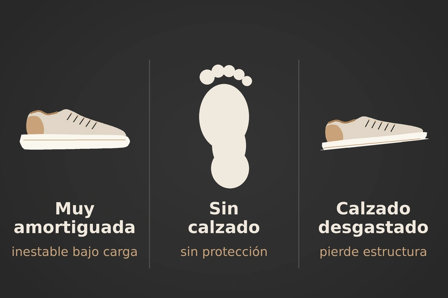
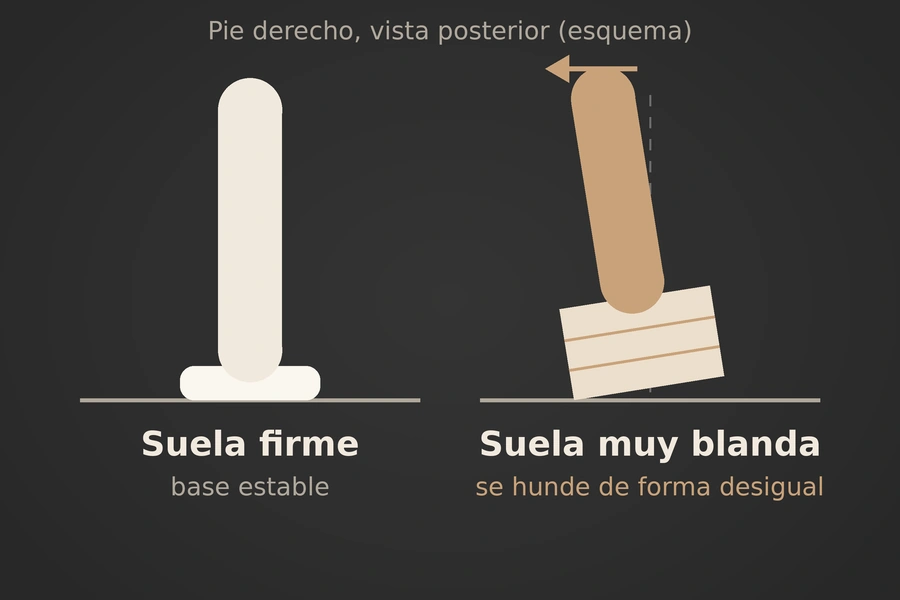
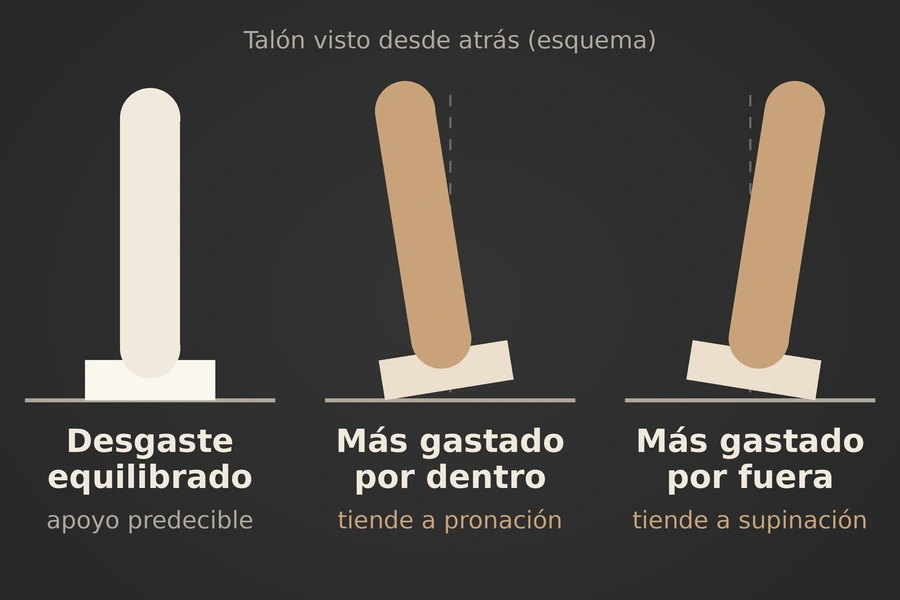

El calzado ayuda, pero ningún extremo es ideal
El calzado puede ayudar a distribuir fuerzas y estabilizar el pie, pero ningún extremo es ideal para todo. En el gimnasio, una zapatilla demasiado blanda puede comprometer la estabilidad bajo carga; entrenar descalza en cualquier ejercicio puede exponer tejidos y dedos a riesgos evitables; y una zapatilla vieja o desgastada puede perder la capacidad de sostener y guiar el apoyo de forma predecible.

El equilibrio biomecánico
El pie debe ser móvil y estable a la vez. Necesita una pronación leve para adaptarse y repartir carga, y una supinación posterior para volverse rígido y transmitir fuerza. En pesas, la función del calzado no debería ser bloquear estos movimientos, sino evitar una base inestable que permita que el arco caiga demasiado o que el tobillo se desplace de forma brusca hacia dentro o hacia fuera.
Una buena zapatilla para fuerza debe dar una plataforma firme, mantener el talón contenido y permitir apoyo activo del pie. La técnica, la fuerza de los músculos del pie, pantorrilla y cadera, además de una progresión sensata de carga, siguen siendo más importantes que el zapato.

Zapatillas demasiado amortiguadas
Una zapatilla muy amortiguada está diseñada, principalmente, para disminuir la incomodidad y las fuerzas repetidas del running. En carrera, una mediasuela blanda puede reducir fuerzas de impacto y la velocidad con que se carga el cuerpo; de hecho, un ensayo clínico encontró más lesiones en corredores con zapatillas más duras que en quienes usaron zapatillas blandas, aunque el efecto protector no fue igual para todos los pesos corporales.
En ejercicios de hipertrofia o fuerza, la necesidad es diferente. Una suela alta, blanda y compresible puede hundirse de forma desigual durante sentadillas, zancadas, step-ups, press de hombros de pie o ejercicios unilaterales. Esto obliga al tobillo a hacer correcciones constantes de pronación, supinación, inversión y eversión mientras la persona sostiene una carga externa.
El riesgo no es que la espuma “rompa” el tobillo por sí sola. El problema es que añade inestabilidad a un sistema que ya debe controlar peso, fatiga y alineación. Si el arco medial cae y la rodilla se va hacia dentro, la carga se reparte peor entre pie, tobillo, rodilla y cadera.
Una mediasuela muy gruesa también puede disminuir la percepción del contacto con el suelo. La revisión de construcciones de calzado de running señala que suelas más gruesas pueden amortiguar mejor el impacto, pero pueden reducir las sensaciones plantares.
Entrenar sin zapatos
Entrenar descalza puede ser útil en situaciones concretas, como peso muerto controlado o ejercicios de movilidad, porque permite sentir con claridad el trípode del pie: talón, base del dedo gordo y base del dedo pequeño. También elimina el hundimiento de una suela blanda y puede facilitar un apoyo firme.
Sin embargo, usar los pies descalzos para todo tipo de ejercicio no es una recomendación universal. En saltos, HIIT, movimientos laterales, zancadas dinámicas, ejercicios con desplazamiento y levantamientos en los que una mancuerna o disco puede caer, el pie queda sin protección ante golpes, cortes, aplastamiento o fricción.
También hay un riesgo de adaptación insuficiente. Pasar de calzado estructurado a entrenar descalza de manera repentina aumenta la exigencia sobre fascia plantar, metatarsos, tendón de Aquiles, gemelos y músculos pequeños del pie. Las zapatillas minimalistas pueden aumentar la carga en la articulación del tobillo y en el antepié respecto a calzado convencional; por eso, cualquier transición debe ser progresiva.
Zapatillas viejas o desgastadas
Una zapatilla no deja de funcionar únicamente porque se vea sucia o tenga algunos pliegues. El problema aparece cuando pierde estructura: la suela se desgasta de forma desigual, el talón se vence hacia un lado, la mediasuela queda comprimida, el contrafuerte pierde firmeza o el pie comienza a deslizarse dentro del calzado.
Cuando una zapatilla se desgasta, cambia la forma en que el cuerpo se mueve. En un estudio con corredores que usaron el mismo par durante 200 millas, el calzado desgastado se asoció con mayor tiempo de apoyo, menos dorsiflexión máxima del tobillo y más flexión plantar al despegar. Esto indica que el cuerpo modifica su estrategia de movimiento cuando la zapatilla pierde sus propiedades originales.

El desgaste también puede ser desigual entre ambos lados. Por ejemplo, si el borde interno del talón está más gastado, el pie puede iniciar cada repetición o cada zancada con una inclinación hacia pronación. Si el borde externo está más gastado, puede favorecer una posición más supinada. En ejercicios de fuerza, esa asimetría puede sentirse como una base inclinada y dificultar el control del arco, tobillo y rodilla.
Las mediasuelas pierden parte de su amortiguación con el uso repetido. Pruebas mecánicas históricas observaron que, entre el equivalente de 250 y 500 millas de carrera, algunos modelos conservaban menos del 60 % de su capacidad inicial de absorción de impacto; la cantidad real depende de material, peso corporal, superficie, frecuencia de uso y modelo.
Señales para reemplazarlas
No existe un número único de meses o kilómetros que sirva para todas las zapatillas. Es mejor revisar el estado funcional y no solo su apariencia.
- La suela está gastada de forma desigual o ya no tiene buen agarre.
- La mediasuela está muy comprimida, con arrugas profundas o sensación de “hundimiento”.
- El talón se inclina hacia dentro o hacia fuera al poner el zapato sobre una mesa.
- El contrafuerte del talón se aplasta fácilmente o ya no sujeta el retropié.
- El pie se desliza dentro del zapato pese a ajustar bien los cordones.
- Aparecen molestias nuevas en pie, tobillo, tibia, rodilla o cadera sin otro cambio claro de entrenamiento.
- El calzado se siente inestable al hacer una sentadilla, zancada o trabajo unilateral.
Riesgos por tipo de ejercicio
| Ejercicio | Zapatilla muy amortiguada | Sin calzado | Zapatilla desgastada |
|---|---|---|---|
| Sentadilla | La espuma puede comprimirse de forma desigual y favorecer pérdida de estabilidad | Riesgo ante caída de barra o discos; mayor demanda del arco si no hay adaptación | Base inclinada o con talón vencido, lo que dificulta alinear pie, rodilla y cadera |
| Peso muerto | Reduce la sensación de plataforma firme y añade altura innecesaria | Riesgo directo ante caída de discos; puede ser válido en ambiente seguro y con técnica controlada | Menor tracción y apoyo irregular; el pie puede deslizarse o inclinarse |
| Zancadas y ejercicios a una pierna | Mayor dificultad para controlar movimientos laterales del tobillo | Más demanda sobre metatarsos, fascia y Aquiles | El desgaste desigual puede aumentar la sensación de inestabilidad |
| Saltos, HIIT y cambios de dirección | Una suela alta y blanda puede aumentar la inestabilidad lateral | Falta de protección frente a impactos, roces y objetos | Menor agarre y peor capacidad de controlar el apoyo |
| Running o caminata rápida | Puede ser adecuado si es específico para correr y se adapta bien a la persona | Aumenta abruptamente la carga del antepié, Aquiles y pantorrilla si no hay transición | Pierde amortiguación, tracción y puede modificar la mecánica de la zancada |
Una recomendación práctica
Para pesas e hipertrofia, conviene reservar una zapatilla de entrenamiento estable: base amplia, suela firme, talón contenido y amortiguación moderada. Para sentadilla pesada, el calzado de halterofilia puede ser útil; para peso muerto, suele funcionar mejor una suela plana y poco compresible.
Para correr o caminar distancias largas, utiliza zapatillas específicas para running o marcha, con amortiguación y estabilidad acordes a tu comodidad y necesidades. Revisa periódicamente el estado de la suela, el talón y la mediasuela, y no uses un par que ya se siente torcido, resbaloso o inestable.
Entrenar descalza puede ser una herramienta puntual, no una obligación ni la respuesta para todos los ejercicios. La decisión más segura es usar el calzado que corresponda a cada actividad y cambiarlo cuando pierda su estabilidad, tracción o capacidad de proteger el pie.
Fuentes consultadas
Conoce todo lo que tratamos en nuestra página de podología o lee más en el Blog de BeautyPod. Sigue la serie con tipo de zapatilla para hipertrofia y tipo de zapatilla para running y caminatas.